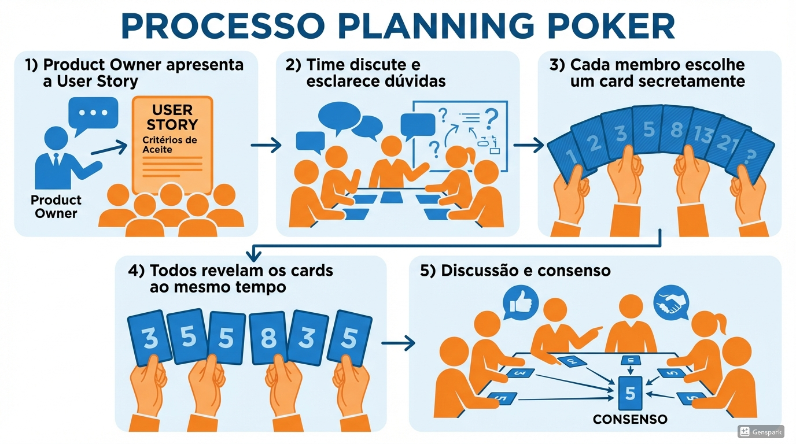

Planning Poker: Técnica de Estimativa por Consenso
Método colaborativo para estimar esforço e complexidade de User Stories
Processo de Planning Poker
1
PO apresenta a User Story
Product Owner descreve a funcionalidade e objetivos do item do
backlog
2
Time discute e esclarece dúvidas
Desenvolvedores fazem perguntas para entender requisitos e
dependências
3
Cada membro escolhe um card secretamente
Todos selecionam cartas com estimativas sem revelar para evitar
viés
4
Todos revelam os cards simultaneamente
Exposição simultânea para evitar influência entre membros
5
Discussão e consenso
Extremos justificam estimativas até chegar a consenso
Múltiplas perspectivas
Reduz viés de âncora
Melhora acurácia
Alinhamento do time
Visualização do Processo

Boas Práticas
Mesma escala para todos
História de referência
Participantes multifuncionais
Timebox nas rodadas
Não fazer média
Registrar estimativa